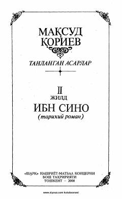

ISBuyuk alloma Ibn Sinoning hayoti va ilmiy merosiga bag'ishlangan tarixiy roman.
Ushbu asar buyuk vatandoshimiz Ibn Sinoning hayoti va ilmiy faoliyatiga bag'ishlangan tarixiy romandir. Muallif allomaning hayot yo'lini va uning shaxsiyatidagi kam o'rganilgan qirralarni badiiy tilda yoritib beradi.